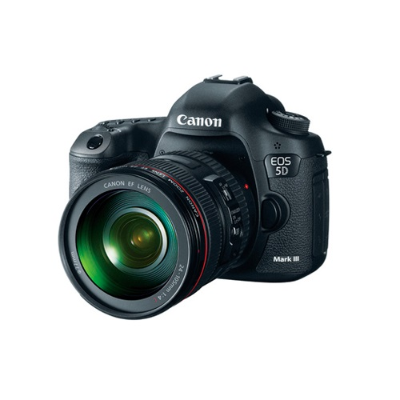

Canon EOS 5D Mark III con 24-105mm
Q 29,680.00
22.3MP Full-Frame CMOS Sensor
DIGIC 5+
Pantalla de 3.2″ ClearView II
Full HD 1080p Video a 30 fps
61 Puntos de enfoque Density Reticular AF
ISO 50 – 102,400
6 fps en RAW+JPEG
63-Zonas Dual Layer Metering
14-Bit RAW
EF 24-105mm f/4L IS USM
Descripcion
Canon se complace en presentar la muy esperada EOS 5D Mark III. La EOS 5D Mark III está diseñada para un excelente funcionamiento gracias a su rendimiento EOS avanzado, con sensor de cuadro completo impresionante y una captura de imagen en alta resolución. Las tecnologias ópticas especiales como el AF Reticular de Alta Densidad de 61 puntos, el amplio rango de configuraciones ISO de 100 a 25600 (expansible a 50 (L), 51200 (H1) y 102400 (H2) convierten a la EOS 5D Mark III en la camara ideal para fotografias de bodas, estudio o exteriores, y es excelente para fotografia fijas. Las capacidades avanzadas de video en alta definición de nivel profesional (que incluyen una variedad de protocolos de grabacion estandares de la industria y un rendimiendo mejorado) permiten la captura de videos cinematograficos hermosos en calidad EOS HD. El recién diseñado sensor CMOS de Canon de cuadro completo y de 22.3 megapíxeles, el Procesador de Imagen DIGIC 5+ de Canon y un rendimiento de captura de hasta 6.0 fps brindan una claridad y una excepcional nitidez, incluso cuando se capturan escenas que se desarrollan rapidamente. Otros avances tecnologicos incluyen un Visor Inteligente, el avanzado Sistema de Medicion de iFCL de Canon, el Alto Rango Dinamico (HDR) y el Modo de Multiples Exposiciones, los cuales convierten a la EOS 5D Mark III en la herramienta multimedia perfecta.